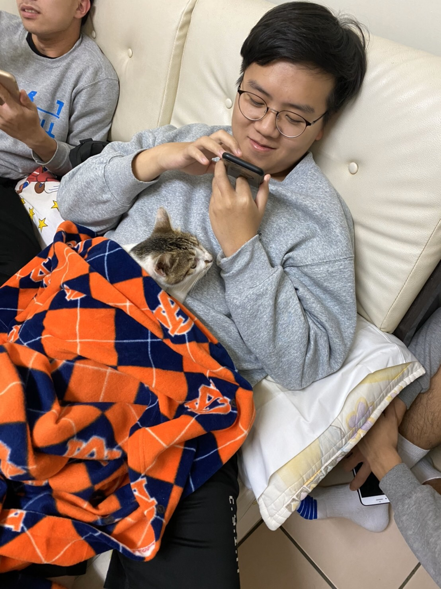

死貓陪我滑手機
經濟課
 粉紅騷包襪
粉紅騷包襪
睡
高中跨年
我那時候有下巴
于詩昱的個人網站
國小就讀私立新民國小，因為是私立的所以沒有所謂的"上半天課"，就特別羨慕隔壁國小每次禮拜三中午就放學了。國中就讀大安國中，國中班導有夠嚴，每個假日還要到學校讀書自習，想到就不爽，可是也特別感謝她，要不是他逼著讀書我也不會考上高中，而是已經在外面打工過日了吧。高中就讀育成高中，雖然是公立的高中，卻比一堆私立的還要混，高中三年根本沒在讀書還交了一堆壞朋友，在這邊真的要特別感謝高二到高三的國文老師，扮演著國中老師的身分整天壓著我們讀書和一堆寫不完的回家作業，是他讓我國文13級分能來中原資管。
小時候假日都會跟我哥去打桌球，可是他比我大四歲所以每次都被他打爆，到了國中我就參加桌球社想說要練好桌球單挑贏過我哥，結果到後來還是一樣爛。高中參加春暉社因為指導老師是教官，跟教官打好關係翹課簽請假單比較好說話，社團時間永遠都是教官到教室播電影然後就走掉，他也不會管你到底有沒有來，用來虛度光陰很適合。大學參加了系學會活動股，很開心玩了很多活動，認識了更多朋友，大三接了學術長只希望不要忘東忘西，自己的工作要記得做完不要拖累大家。
高中以前，課餘時間不是跟朋友出去玩，就是在家打遊戲，根本沒有所謂的興趣和嗜好，高中二時因為班級離羽球場最近，所以每次午休和放學後都會跟朋友衝去羽球場打羽球，一開始雖然打得很爛可是很開心，後來變得更強也成了興趣，大學就加入了系羽。除了羽球，高中也常常跟朋友去打撞球，雖然升上了大學就沒再打過幾次了，可是當時每個假日都會約朋友一起打，也算曾經很熱愛的一份興趣吧。
出了社會以後不論做什麼工作，對得起自己，能孝敬父母不讓父母傷心，讓他們以我為榮，並快樂的過生活。
對未來有幫助的知識都有好好吸收。把握剩下的兩年，就算玩樂也比虛度光陰好。畢業以後朋友還能常常聯絡。
粉紅騷包襪